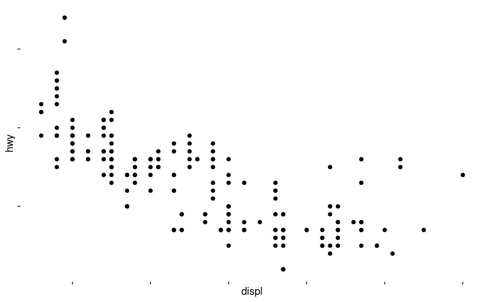
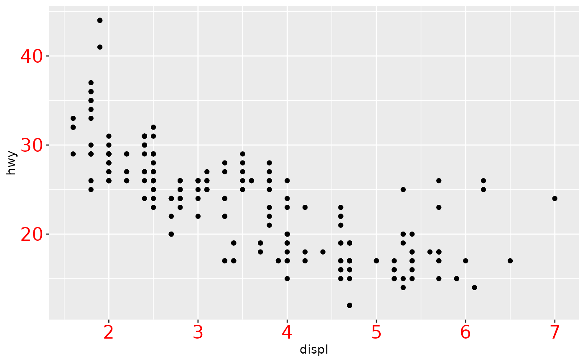
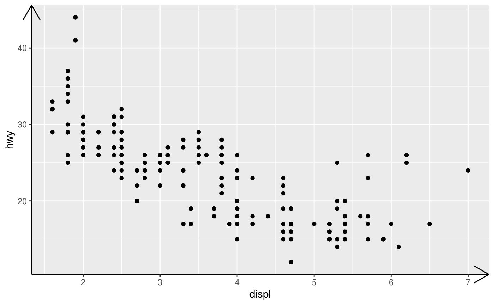
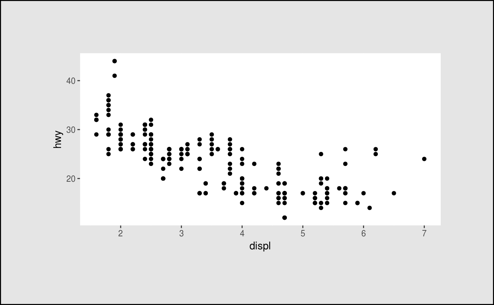

In conjunction with the theme system, the element_ functions
specify the display of how non-data components of the plot are a drawn.
element_blank: draws nothing, and assigns no space.
element_rect: borders and backgrounds.
element_line: lines.
element_text: text.
rel() is used to specify sizes relative to the parent,
margins() is used to specify the margins of elements.
margin(t = 0, r = 0, b = 0, l = 0, unit = "pt") element_blank() element_rect(fill = NULL, colour = NULL, size = NULL, linetype = NULL, color = NULL, inherit.blank = FALSE) element_line(colour = NULL, size = NULL, linetype = NULL, lineend = NULL, color = NULL, arrow = NULL, inherit.blank = FALSE) element_text(family = NULL, face = NULL, colour = NULL, size = NULL, hjust = NULL, vjust = NULL, angle = NULL, lineheight = NULL, color = NULL, margin = NULL, debug = NULL, inherit.blank = FALSE) rel(x)
| t, r, b, l | Dimensions of each margin. (To remember order, think trouble). |
|---|---|
| unit | Default units of dimensions. Defaults to "pt" so it can be most easily scaled with the text. |
| fill | Fill colour. |
| colour, color | Line/border colour. Color is an alias for colour. |
| size | Line/border size in mm; text size in pts. |
| linetype | Line type. An integer (0:8), a name (blank, solid, dashed, dotted, dotdash, longdash, twodash), or a string with an even number (up to eight) of hexadecimal digits which give the lengths in consecutive positions in the string. |
| inherit.blank | Should this element inherit the existence of an
|
| lineend | Line end Line end style (round, butt, square) |
| arrow | Arrow specification, as created by |
| family | Font family |
| face | Font face ("plain", "italic", "bold", "bold.italic") |
| hjust | Horizontal justification (in \([0, 1]\)) |
| vjust | Vertical justification (in \([0, 1]\)) |
| angle | Angle (in \([0, 360]\)) |
| lineheight | Line height |
| margin | Margins around the text. See |
| debug | If |
| x | A single number specifying size relative to parent element. |
An S3 object of class element, rel, or margin.
plot <- ggplot(mpg, aes(displ, hwy)) + geom_point() plot + theme( panel.background = element_blank(), axis.text = element_blank() )plot + theme( panel.background = element_rect(fill = "white"), plot.margin = margin(2, 2, 2, 2, "cm"), plot.background = element_rect( fill = "grey90", colour = "black", size = 1 ) )